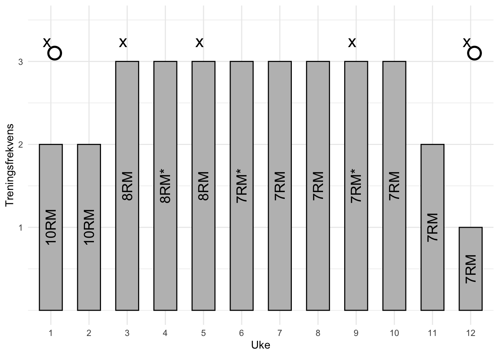
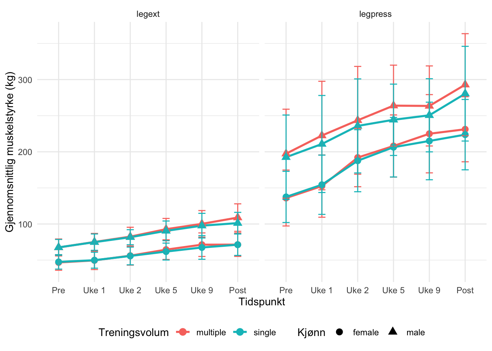

Styrketrening er vist seg å være en effektiv fremgangsmåte for å både øke tverrsnittsarealet i skjelettmuskulaturen vår, samt øke egenskapen til å generere maksimal kraft, også omtalt som styrken vår. Styrketrening er spiller en viktig rolle for svært mange, uavhening av forutsetning eller målsetning med treningen. Blandt annet er tung styrketrening meget effektivt for å motvirke enkelte sykdommer eller lidelser, som for eksempel osteoporose. Videre er denne treningsformen en viktig del av treningen for de aller fleste idrettsutøvere, uavhengig om utøveren konkurrerer i en styrkeidrett eller utholdenhetsidrett. Men hva er egentlig styrketrening? Kort forklart er styrketrening all trening som er tiltenkt å bedre eller vedlikeholde vår evne til å produsere maksimal kraft (Raastad et al. s, 13).
Om vi trener for enten økning i styrke, muskelmasse eller for egen helse, så er treningsvolum en essensiell faktor som kan virke bestemmende for progresjon. Treningsvolum omfatter det totale arbeidet som utføres, og bestemmes av belastning, antall serier, repetisjoner og trenings frekvensen. Treningsvolum har i lang tid vært et viktig tema, dette skyldes at det vil være svært fordelaktig å finne et optimalt volum som maksimerer styrkeøkning og muskelvekst, men som samtidig minimerer risiko for skader eller tap av prestasjon (Schoenfeld et al., 2017).
Schoenfeld (2013) forteller at treningsvolum er en av de mest essensielle faktorene som fører til muskelvekst, og hvor et høyere volum medfører økt vekst. Videre forteller Krieger (2010) at et høyere treningsvolum kan medføre både positive og negative konsekvenser, bestemt av individets nåværende treningsstatus. Det virker å være et vippepunkt ved et høyere treningsvolum, uten at det enkelt kan konkretiseres hva som er nok eller for mye. Høyere treningsvolum kan bidra til å øke rekruttering av motoriske enheter, og vil kunne virke gunstig for både muskelvekst og styrkeøkning. Men ved for høyt volum kan det medføre muskelødem og økt restitusjonstid (Häkkinen et al., 1998; Kraemer et al., 2002).
For mange er prestasjonen en svært essensiell faktor, og her kan treningsvolum være faktor som kan påvirke denne. Et høyere volum kan medføre mer muskelvekst, men dette på bekostningen av mer “delayed onset muscle soreness” (DOMS), og det kan medføre en økt restitusjonstid (Schoenfeld et al., 2017) I kontrast til dette kan det virke som at et lavere treningsvolum kan virke mindre belastende for kroppen vår. Og dette kan ifølge Schoenfeld et at. (2017) være gunstig for å øke motorenhetrekruttering per repetisjon, og dette kan derav være gunstig for maksimal styrke. Videre på dette vil lavere treningsvolum ifølge Krieger (2010) kunne åpne opp for en høyere treningsfrekvens.
Metode
Deltakere og studieoversikt
I studien ble det inkludert 41 deltakere, dette var fordelt på både kvinner og menn. Inklusjonskriteriene for deltakerne var at de ikke kunne kategoriseres som røykere, de var mellom 18 og 40 år gamle. Det var også klare ekslusjonskriterier av aplikantene. Aplikanter ble ikke inkludert i studien dersom de hadde redusert muskelstyrke som følge av tidligere eller en nåværende skade(r), trent en eller mer styrkeøkt ukentlig fra inklusjonsdato, en intoleranse for lokalbedøvelse, og bruken av medikamenter som kan påføre en effekt på treningsadaptasjoner. Det ble eksludert 7 deltakere fra data analysen, dette skyldtes at de ikke hadde gjennomført et minimum av 85% av den planlagte treningen. Årsaken til ikke tilstrekkelig gjennomført trening var smerter eller ubehag i underekstremitetene under gjennomføring av treningen (n = 5), skade oppstått utenfor studieprotokoll (n = 1), eller ikke overholdt studieprotokollen (n = 1). Ved protokoll start var det ingen forskjeller i maksimal voluntær kontraksjon (MVC) normalisert til kroppsmasse eller antropometri (Table 1).
── Attaching core tidyverse packages ──────────────────────── tidyverse 2.0.0 ──
✔ dplyr 1.1.4 ✔ readr 2.1.5
✔ forcats 1.0.0 ✔ stringr 1.5.1
✔ ggplot2 3.5.1 ✔ tibble 3.2.1
✔ lubridate 1.9.3 ✔ tidyr 1.3.1
✔ purrr 1.0.2
── Conflicts ────────────────────────────────────────── tidyverse_conflicts() ──
✖ dplyr::filter() masks stats::filter()
✖ dplyr::lag() masks stats::lag()
ℹ Use the conflicted package (<http://conflicted.r-lib.org/>) to force all conflicts to become errors
Attaching package: 'kableExtra'
The following object is masked from 'package:dplyr':
group_rows
Table 1: Deltakerkarakteristikker
Kvinne
Mann
Ekskludert
Inkludert
Ekskludert
Inkludert
N
4
18
3
16
Alder
22.9 (1.6)
22.0 (1.3)
24.3 (1.5)
23.6 (4.1)
Vekt
64.6 (9.7)
64.4 (10.4)
88.2 (22.4)
75.8 (10.7)
Stature
166 (8)
168 (7)
189 (5)
183 (6)
Verdiene presenteres som gjennomsnitt og standardavvik (SD)
Etter at utvalget av deltakere var klart gjennomgikk de en treningsintervensjon på 12 uker med styrketrening. Treningen ble utført på hele kroppen, og foregikk i perioden september til november. For å kunne differensiere treningsvolumet for hver enkelt deltaker, ble beinøvelsene utført unilateralt (et bein av gangen). Det var randomisert om det var høyre eller venstre bein som skulle utføre 1 eller 3 sett for alle deltakere. Alle deltakere skulle utføre begge volumprotokoller på forskjellige bein (f.eks. 1 sett venstre og 3 sett høyre). Den maksimale styrken til deltakerne ble målt ved protokoll start, underveis i protokoll (uke 3, 5 og 9), og ved avslutning av protokollen. Muskeltverrsnittet ble kun mølt før protokollstart og ved avslutning av protokoll (Figure 1).

Figure 1
Figuren viser frekvensen av treningen og intensiteten av treningen, intensiteten er vist som repetisjon maks (RM), f.eks. 10RM betyr 10 utførte repetisjoner, hvor repetisjon 10 var kapasitets taket til deltakeren. Der hvor det ble benyttet en intensitet på 90% eller mer av 1RM, er det markert med (*). Øverst på figuren ser vi to sirkelsymboler ved start og slutt av protokollen, denne representerer hvor CSA ble målt. Målingene av CSA ble tatt med DXA og MR av quadriceps muskelgruppen. Ukene hvor det ble utført styrkemålinger markeres med x (pre-intervensjon; n = 34, under; n = 18, post-intervensjon; n = 34).
Protokoll for styrketrening
Deltakerne fikk alle utdelt en standardisert oppvarming som skulle utføres før hver treningsøkt. Oppvarmingen besto av 5 minutter på ergometersykkel (12-14 på Borgs skala), etter sykkel skulle de utføre 10 push-ups med tilpasset vanskelighetsgrad, sit-ups, knebøy og rygghev. Videre skulle de utføre ett sett med 10 repetisjoner for hver enkelt styrkeøvelse, hvor belastningen tilsvarte 50% av deres 1RM.
Selve styrketreningen besto av to deler, en for bein og en for overkropp. Treningen av bein ble gjennomført unilateralt, og øvelsene som ble utdført var beinpress, knefleksjon, og kneekstensjon, og øvelsene ble utført i nevnt rekkefølge. Avhengig av utdelt gruppe, ble alle øvelser utført med ett eller tre sett, og hvor beinet som ble valgt til å gjennomføre ett-sett protokoll ble arbeidet utført mellom sett 2 og 3 til 3-sett beinet. Pausene mellom settene var standardisert til å vare fra 90-180 sekunder. Etter protokoll for underkropp var utført skulle deltakere utføre to sett i bilateral benkpress, nedtrekk og skulderpress eller sittende roing. Skulderpress og sittende roing skulle utføres annenhver treningsøkt. Treningsintensiteten ble gradvis økt gjennom intervensjonen, noe som ilustreres i Figure 1. Etter uke 9 var alle treningsukene som inkluderte tre økter en økt med lavere intensitet, men repetisjonsantallet var det samme (belastning var 90% av forrige økt). Etter treningsøktene med maksimal innsats skulle det være mimimum 48t før neste økt med maksimal innsats, men etter 24t kunne deltakerne trene med en redusert intensitet. For å bidra til restitusjon for deltakerne, ble det delt ut en standardisert drikke etter hver treningsøkt, denne inneholdt 0.15 g kg\(^{-1}\) protein, 11.2g kg\(^{-1}\) karbohydrater og 0.5 g kg\(^{-1}\) fett. Protokollen var tilrettelagt slik at ikke alle treningsøktene måtte gjennomføres under veilledning for å fasilitere for at protokollen skulle være mer gjennomførbar for deltakerne. Deltakerne ble også instuert i hvordan man skal loggføre treningen detaljert i en treningsdagbok for øktene som ble utført uten veilledning. Dette ble gjort for å kunne sikre fremgang enda bedre.
Målinger av maksimal muskelstyrke og muskelens CSA
For å måle deltakernes maksimale styrke ble det benyttet 1RM test i øvelsene unilateral beinpress og kneekstensjon. Før 1RM test ble det benyttet en standardisert oppvarmingsprotokoll. Oppvarmingen besto av 10, 6 og 3 repetisjoner på 50%, 75% og 85% av antatt 1RM, etter dette ble belastningen økt gradvis frem til deltakerne ikke lenger klarte å utføre en fullverdig repetisjon. Pre-styrkeprotokoll ble det utført to 1RM målinger, med minimum fire dager treningsfri mellom testene, og hvor den beste testen ble gjeldende for videre analyser. Alle deltakere hadde en post-protokoll 1RM test, men noen testet også styrken underveis i protokoll (n = 18). I målingene underveis i protokoll skulle det være minimum 48t fra forrige treningsøkt. For deltakerne som ikke testet styrken underveis i protokollen ble de regulære styrkeøktene prioritert, som følge av manglende tid, sykdom eller andre utfordringer.
For å undersøke hypertrofi påført av protokollen ble det utført målinger av CSA i quadriceps muskelgruppen før og etter test. Dette ble gjort ved å benytte MR bilder av quadriceps, protokoll for dette var i henhold til produsentens egen protokoll (S-Scan, Esaote Europe B.V., Maastricht, Nederland). Personen som skulle analysere MR bildene var blindet, for å gjøre dette ble det benyttet OsiriX (v.5.6, Pixmeo Sarl, Bernex, Sveits). Målingene av quadriceps CSA både før og etter protokoll ble gjort på samme sted på låret. Resultat av målingene måtte også inneholde minimum fir bilder påfølgende, med 5mm tykkelse og med en avstand på 10mm.
Data analyse og statistikk
All deskriptiv data presenteres som gjennomsnitt eller standardavvik, med mindre noe annet spesifiseres. Før undersøkelsen ble gjennomfort, ble det forhåndsbestemt utregningsmetode for utvalgsstørrelse. Denne utregnelsen viste at et utvalg på kun 40 deltagere ville være tilstrekkelig for å kunne vise eventuelle forskjeller på rundt 3 og 5 prosentpoeng, for både maksiaml styrke og CSA på 1 og 3 sett, og fremdeles gi en ønkselig statistisk styrke på 80%.
For å kunne se hvordan volumforhold vil påvirke hypertrofi og maksimal styrke ble det benyttet lineære blandede modeller. De relative endringene pre-intervensjon plasseres som avhengig variabel, og antall sett ble plassert som uavhengig variabel. Variablene pre-intervensjon, og kjønn ble kovarianter for å kunne kontrollere eventuelle effekter de kan påføre for hypertrofi og styrke.
Reslultater
`summarise()` has grouped output by 'time', 'sets', 'sex'. You can override
using the `.groups` argument.
Warning: Using `size` aesthetic for lines was deprecated in ggplot2 3.4.0.
ℹ Please use `linewidth` instead.

Figure 2: Utvikling i muskelstyrke for leg press og leg extension
Ser vi til tabellen over er resultatene av maksimal styrke i øvelsene beinpress og kneekstensjon (legpress & legext) visualisert. I øvelsen kneekstensjon begynner vi å se en tydelig forskjell til favør av fler-sett fra allerede uke 5, og i uke 9 blir forskjellen mer signinifikant. I beinpress er det synlig differanse allere etter første uke. I uke 5 er forskjellem mellom 1 og 3 sett størst, forskjellen blir mindre fra uke 9 og frem til post-intervensjon.
Få med: - gjennomsnitt endring pre til post, med SD og p-verdi.
Table 2: Oppsummering av muskeltverrsnitt før og etter intervensjon (kombinert for kjønn, kun pre og post)
Tidspunkt
Treningsvolum
Gjennomsnittlig muskeltverrsnitt (g)
Standardavvik (SD)
post
multiple
9093.368
1297.290
post
single
8983.975
1219.944
pre
multiple
8835.974
1189.980
pre
single
8845.317
1175.207
Tabellen over viser gjennomsnittlig CSA oppgitt i gram (g), og SD for fler eller ett-sett pre til post-intervensjon. Dataene presentert er kombinert for både kvinner og menn. Tabellen viser en tydelig fordel for fler-sett for økning i CSA av quadriceps muskelgruppen (rundt 110g).
Få med: - gjennomsnitt endring pre til post
Resultatene i undersøkelsen oppnådde statiskisk signifikans, hengoldsvis ble resultatene; t = 2.1875, df = 33, p-verdi = 0.0359. Resultatene av denne t-testen sikrer validiteten funnene i undersøkelsen
Diskusjon
Hva kan være årsaken til resultatet?
I denne undersøkelsen ble det funnet bedre effekt på økning i CSA og maksimal styrke på quadriceps muskelgruppen ved å benytte flere sett (3 versus 1), for både kvinner og menn. Disse funnene er i tråd med Schoenfeld (2013) sine uttaleser, hvor treningsvolum er en essensiel faktor for adaptasjoner påført av styrketrening, og at det ble observert en såkalt dose-respons for hvert ekstra sett påført i totalt ukentlig volum. Det må nevnes at både Häkkinen et al. (1998) og Kraemer et al. (2002) forteller om et balansepunkt ved høyere treningsvolum, hvor ved for høyt volum kan negativt påvirke restitusjon og påføre muskelødem. Til tross for at undersøkelsen finner statistisk signifikans til fordel for høyere volum, vil det kunne være til fordel å starte med et lavere volum og øke volumet gradvis. Raastad et al. (2013) forteller at endring i muskelstyrke og CSA varierer stort fra studie til studie, og at dette skyldes individuelle forskjeller fra forsøkspersoner, enten dette dreier seg om genetisk utgangspunkt eller treningshistorikk. Dermed ved å starte en treningsintervensjon ved lavere volumn og øke gradvis bedre sikre å finne det gunstige treningsvolumet til individet, uten å øke risiko for skader eller treningsfatigue.
Protokollen benyttet seg av relativ høye intensiteter (repetisjon maks), ved å benytte oss av høyere intesitet øker det kravet for rekruttering av motoriske enheter, og dermed bedre rekruttering av høy-terskel enheter (type-II og IIx). Slik trening viser også til bedre hypertrofi ved høy-terskel muskelfibre (Raastad et al., s. 45. 2013).
Styrkeøkningen
Er det volumet alene som utgjør forskjellen? Eller ville resultatene kunne sett annerledes ut om den totale tonnasjen mellom ett og tre-sett var standardisert.
Svare vesentlig mer utfyllende på samtlig punkter.